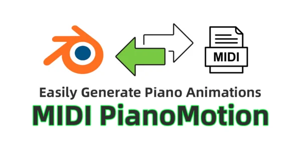
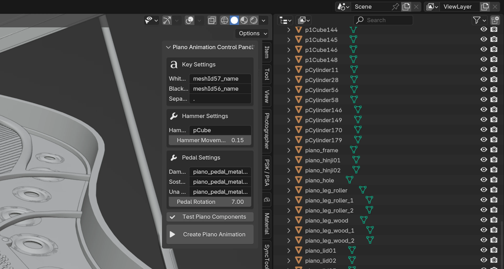
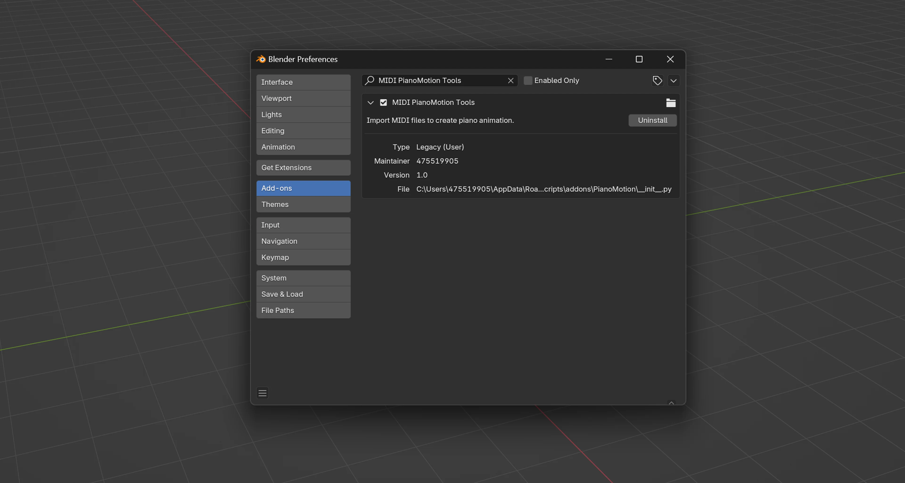
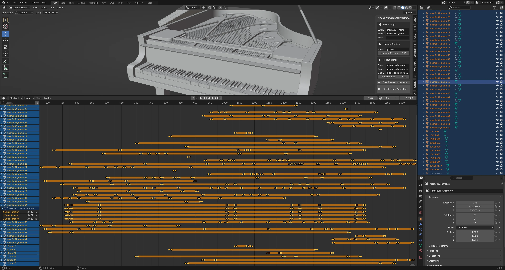

MIDI PianoMotion – 在 Blender 中将 MIDI 文件转化为精美钢琴动画
使用以下工具释放您音乐创作的全部潜力： MIDI PianoMotion——这是精心打造的顶级 Blender 插件，可将您的 MIDI 文件转换为逼真的钢琴动画。 无论您是音乐制作人、作曲家、教育工作者还是视觉艺术家，MIDI PianoMotion 都能简化动画流程，让您轻松为项目添加动态视觉元素。



下载与安装
编辑 > 偏好设置 > 插件 > 安装，然后选择已下载的 ZIP 文件。导入 MIDI 文件
导入 MIDI 并选择您需要的 MIDI 文件。生成动画
自定义与导出
⭐️⭐️⭐️⭐️⭐️
"MIDI PianoMotion 彻底改变了我制作音乐视频的方式。动画非常逼真，为我节省了大量时间！"
— Alex M.，音乐制作人
⭐️⭐️⭐️⭐️⭐️
"作为一名教育工作者，这个插件彻底改变了我的在线钢琴课程。我的学生们非常喜欢这些视觉辅助工具！"
— Linda K.，音乐教师
使用 MIDI PianoMotion 提升您的 Blender 项目。 将您的 MIDI 文件轻松转化为精美的钢琴动画，让您的音乐愿景变为现实。
🎥 观看演示视频: [插入 演示视频 链接]
💾 立即下载: [插入购买链接]
MIDI PianoMotion 用户交流，分享技巧、展示项目，并了解最新功能和更新。
🔗 关注我们的社交媒体:
有关许可和条款的更多详情，请访问我们的 许可证 Information 页.
MIDI PianoMotion 是您在 Blender 中创建动态逼真钢琴动画的终极解决方案。通过无缝 MIDI 集成和专业级动画工具为您的创意项目赋能。立即购买，将您的音乐提升到新的高度！
注意：请确保将占位符链接（如 [插入 演示视频 链接], [插入购买链接]）以及社交媒体链接替换为实际 URL 后再上传到 Blender Market。
MIDI PianoMotion Tools 是专为 Blender 设计的专用插件，用于将 MIDI 文件转换为钢琴动画。
它可以生成逼真的按键动画、琴槌动作和踏板效果，并支持可自定义的发射效果以增强视觉表现。
Blender 4.2.0 或更高版本
Python 库依赖： mido (附带安装说明)
MIDI 文件导入
支持标准 MIDI 文件格式
自动将 MIDI 事件转换为钢琴动画
动画效果
逼真的按键动画
琴槌机构动画
三踏板动画效果
左右手颜色区分
自定义选项
可调节的琴键颜色
灵活的琴键命名规则
可调节的动画参数
通过 Blender 偏好设置从以下文件安装插件： .zip 文件：
获取 .zip 文件，来自网站或开发者，例如 MIDI_PianoMotion_Tools.zip.
In Blender, go to 编辑 > 偏好设置 > 插件.
点击 安装，选择 .zip 文件，然后点击 安装插件。
在插件列表中，找到 PianoMotion Pro 并通过勾选复选框启用它。
mido 是一个用于处理 MIDI 文件的 Python 库。 PianoMotion Pro 需要 mido 才能正常工作。
如果您遇到类似 No module named 'mido'的错误，说明该库缺失。
解决方案：
In Blender’s Python Console, run:
或者：
安装 mido using your system’s Python installation.
复制 the installed mido module into Blender’s scripts/modules folder.
然后重启 Blender。如果成功，MIDI 文件导入将正常工作。
安装后，按 N 键在 3D 视口中打开侧边栏，然后前往 Piano 标签页访问插件面板。
插件面板位于 3D 视口的侧边栏中（按 N 键打开）。 在 Piano 标签页下找到它。
琴键设置
白键前缀： 白键的名称前缀
黑键前缀： 黑键的名称前缀
琴键分隔符： 琴键名称的分隔符
白键颜色： 白键的默认颜色
黑键颜色： 黑键的默认颜色
琴槌设置
琴槌前缀： 琴槌的名称前缀
琴槌移动距离： 琴槌的移动距离
踏板设置
制音踏板： 制音踏板的对象名称
持续音踏板： 持续音踏板的对象名称
柔音踏板： 柔音踏板的对象名称
踏板旋转： 踏板的旋转角度
准备工作
确保钢琴模型使用正确的对象命名。
使用 测试组件 按钮验证正确的映射。
创建动画
点击 创建钢琴动画 按钮。
选择要导入的 MIDI 文件。
等待动画生成。
调整参数
根据需要微调发射效果。
调整琴键颜色和动画设置。
实时预览结果。
钢琴模型要求
52 个白键
36 个黑键
88 个琴槌
3 个踏板
命名约定
白键：meshId57_name.1 to meshId57_name.52
黑键：meshId56_name.1 to meshId56_name.36
琴槌：pCube1 to pCube88
踏板：piano_pedal_metal01, piano_pedal_metal02, piano_pedal_metal03
性能注意事项
较大的 MIDI 文件生成动画需要更长时间。
建议先使用较短的 MIDI 文件进行测试。
如果组件测试失败
检查对象命名是否遵循所需的约定。
确认所有必要的钢琴组件都存在。
验证对象层级是否正确。
如果动画效果不满意
修改琴键和琴槌的移动设置。
检查并调整踏板旋转设置。
作者： 475519905
版本： 1.0
类别： 动画
联系方式： [qq475519905]
本软件基于 GNU 通用公共许可证 v3.0 (GPL-3.0) 授权。